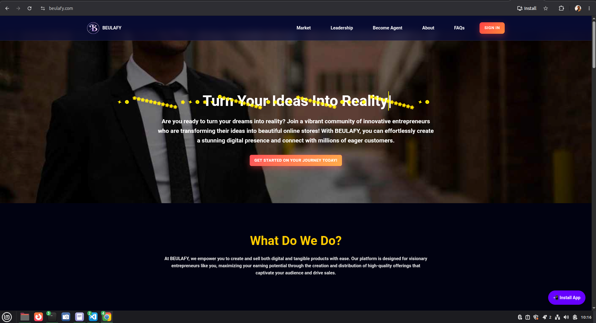

Beulafy
A digital platform focused on empowering businesses and individuals through technology. This project helped me practice website planning, interface design and software development.
HTMLCSSJavaScriptPHPMySQL
Learn More